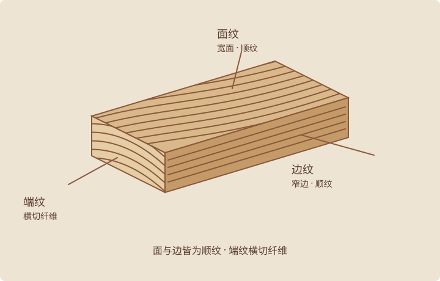

木材纤维大多顺着树干生长，也沿着木板的长度延伸。顺着纤维看，与横切纤维看见的并不相同。

面纹
木板最宽的表面通常称为板面。桌面、柜门往往呈现这一面，纹样会随木材来自树干的哪个位置而变化。
边纹
木板较窄、沿长度延伸的表面是板边。面与边都沿着木纤维，因此同属顺纹表面；“边纹”并不能说明木板采用了哪种锯切方式。
端纹
横切木板时，会看到纤维的截面与年轮。端纹吸收液体和涂装的方式不同，完成后可能显得更深；接合时也需要相应的结构与处理。
纤维方向，不等于年轮角度
面纹、边纹、端纹说的是木板表面与纤维的关系；平锯、四分锯、径锯说的是年轮与板面的角度。一块平锯木板同样有面、边与端。